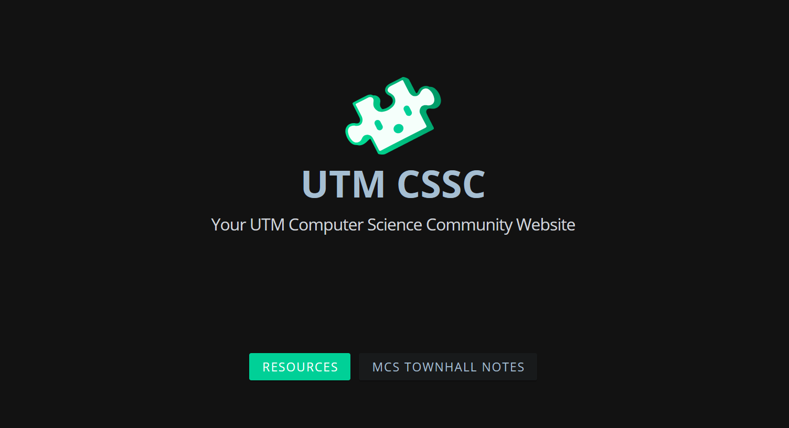
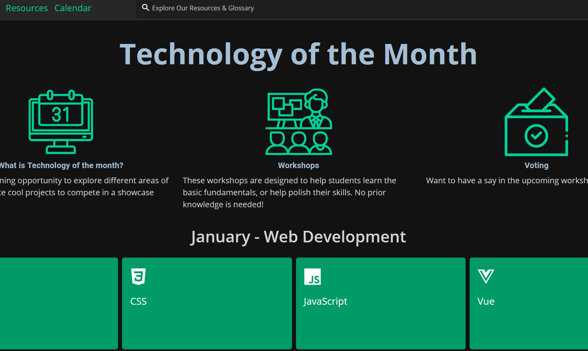
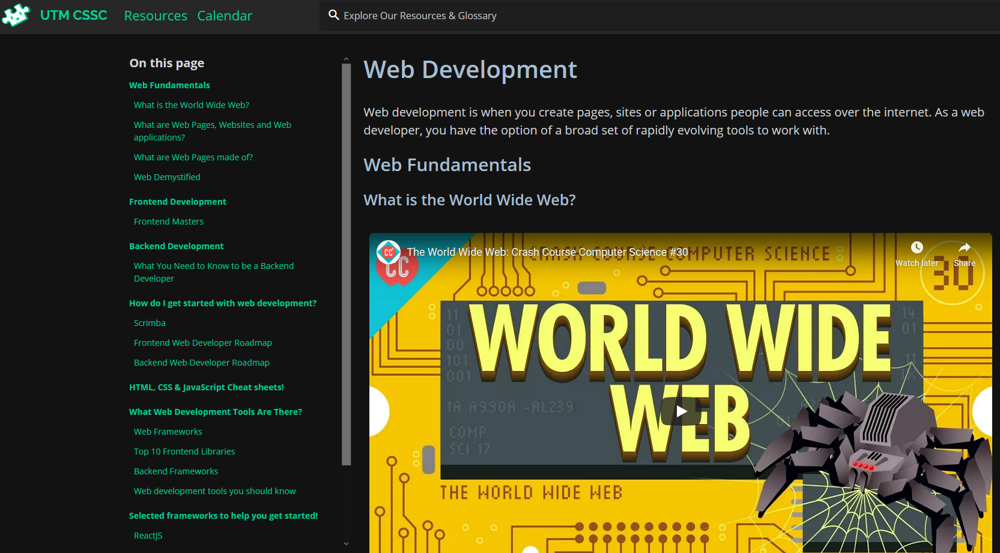
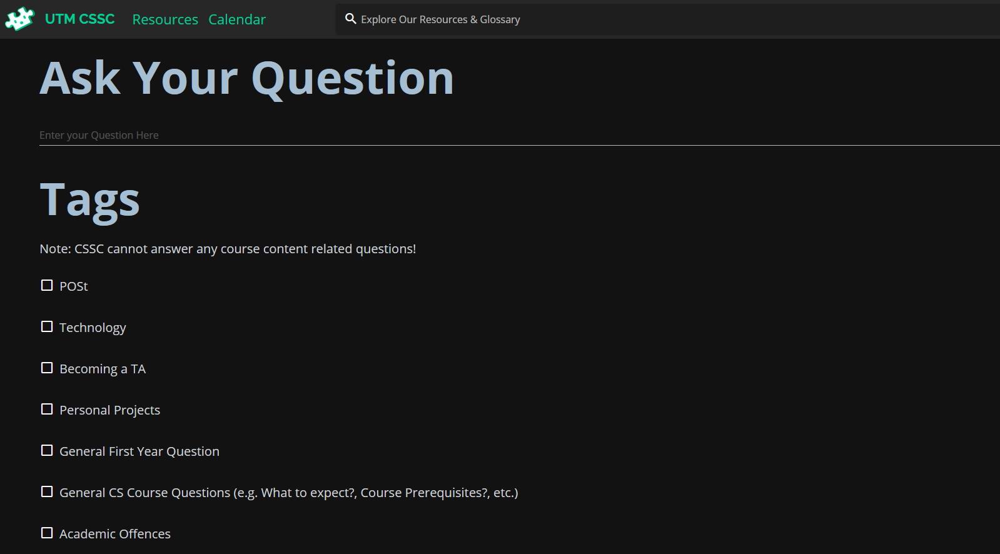

University of Toronto - CSSC
Technology Used: Vue, Nuxt, Tailwind CSS, Javascript
Computer science student community (CSSC) is a student ran community acting as a representation of all computer science students and the liason between the computer science faculty and the students at the University of Toronto. CSSC's main communication platform is a website made with Vue, Nuxt, and Tailwind CSS. The website offers many uses such as "Ask Jack", which allows students to submit questions, in which an upper year student would answer, as well as a voting system for the Technology of the Month initative, and a variety of resource pages for students to access.
   